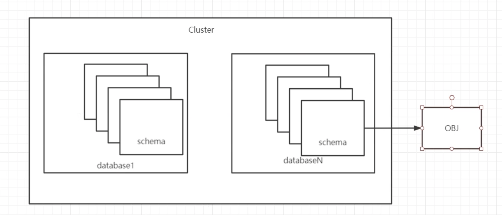

1 PostgreSQL介绍&安装&链接管理&用户权限管理
PostgreSQL，简称PG或PGSQL. c和c+＋开发。开源的关系型数据库系统。 支持多种操作系统平台。
- 官网：www.postgres.org
- 中文社区 http://www.postgres.cn
2、源码包安装配置
2.1 系统网络、防火墙配置
2.2 创建数据库用户和组
sudo -i
useradd postgres
passwd postgres
12345
# passwd postgres
Changing password for user postgres.
New password:
BAD PASSWORD: The password is shorter than 8 characters
Retype new password:
passwd: all authentication tokens updated successfully.
2.3 安装依赖包
yum groupinstall -y "Development Tools" "Legacy UNIX Compatibility"
yum install -y bison flex readline* zlib-devel gcc* gmake
2.4 创建目录并授权
mkdir -p /usr/local/pg12
mkdir -p /pgdata/12/data
chown -R postgres. /pgdata
chown -R postgres. /usr/local/pg12
chmod 700 /pgdata/12/data -R
2.5 系统参数优化
# vi /etc/sysctl.conf
kernel.shmmax = 68719476736
kernel.shmall = 4294967296
kernel.shmmni = 4096
kernel.sem = 50100 64128000 50100 1280
fs.file-max = 7672460
net.ipv4.ip_local_port_range = 9000 65000
net.core.rmem_default = 1048576
net.core.rmem_max = 4194304
net.core.wmem_default = 262144
net.core.wmem_max = 10485761
# sysctl -p
# vi /etc/security/limits.conf
* soft nofile 131072
* hard nofile 131072
* soft nproc 131072
* hard nproc 131072
* soft core unlimited
* hard core unlimited
* soft memlock 50000000
* hard memlock 50000000
建议关闭numa 设置。策略为deadline(机械)或者noop(SSD)
# sysctl -p
kernel.shmmax = 68719476736
kernel.shmall = 4294967296
kernel.shmmni = 4096
kernel.sem = 50100 64128000 50100 1280
fs.file-max = 7672460
net.ipv4.ip_local_port_range = 9000 65000
net.core.rmem_default = 1048576
net.core.rmem_max = 4194304
net.core.wmem_default = 262144
net.core.wmem_max = 10485761
2.6 源码安装pg
2.6.1 下载软件至/opt，并解压
https://www.postgresql.org/ftp/source/v12.6/
cd /opt/
[root@jabox opt]#
wget --no-check-certificate https://ftp.postgresql.org/pub/source/v12.6/postgresql-12.6.tar.gz
# ls
postgresql-12.6.tar.gz
[opt]# tar xf postgresql-12.6.tar.gz
[opt]# cd postgresql-12.6/
[postgresql-12.6]# ./configure --prefix=/usr/local/pg12 --with-pgport=1921
[postgresql-12.6]# gmake world
[postgresql-12.6]# gmake install-world
2.7 设置环境变量
[postgresql-12.6]# su - postgres
# vim .bash_profile
export PGDATA=/pgdata/12/data
export LANG=en_US.utf8
export PGHOME=/usr/local/pg12
export LD_LIBRARY_PATH=$PGHOME/lib:/lib64:/usr/lib64:/usr/local/lib64:/lib:/usr/lib:/usr/local/lib:$LD_LIBRARY_PATH
export DATE=`date +"%Y%m%d%H%M"`
export PATH=$PGHOME/bin:$PATH:.
export MANPATH=$PGHOME/share/man:$MANPATH
export PGUSER=postgres
source /etc/profile
[~]$ psql --version
psql (PostgreSQL) 12.6
2.8 初始化数据
# su - postgres
# 简易初始化
initdb -D /pgdata/12/data -W
# 生产建议
initdb -A md5 -D $PGDATA -E utf8 --local=C -W
$ initdb -D /pgdata/12/data -W
The files belonging to this database system will be owned by user "postgres".
This user must also own the server process.
The database cluster will be initialized with locale "en_US.utf8".
The default database encoding has accordingly been set to "UTF8".
The default text search configuration will be set to "english".
Data page checksums are disabled.
Enter new superuser password: 12345
Enter it again: 12345
fixing permissions on existing directory /pgdata/12/data ... ok
creating subdirectories ... ok
selecting dynamic shared memory implementation ... posix
selecting default max_connections ... 100
selecting default shared_buffers ... 128MB
selecting default time zone ... UTC
creating configuration files ... ok
running bootstrap script ... ok
performing post-bootstrap initialization ... ok
syncing data to disk ... ok
initdb: warning: enabling "trust" authentication for local connections
You can change this by editing pg_hba.conf or using the option -A, or
--auth-local and --auth-host, the next time you run initdb.
Success. You can now start the database server using
pg_ctl -D /pgdata/12/data -l logfile start
# pg_ctl start
waiting for server to start....2022-04-24 03:59:25.840 UTC [25554] LOG: starting PostgreSQL 12.6 on x86_64-pc-linux-gnu, compiled by gcc (GCC) 4.8.5 20150623 (Red Hat 4.8.5-44), 64-bit
2022-04-24 03:59:25.843 UTC [25554] LOG: listening on IPv6 address "::1", port 1921
2022-04-24 03:59:25.843 UTC [25554] LOG: listening on IPv4 address "127.0.0.1", port 1921
2022-04-24 03:59:25.845 UTC [25554] LOG: listening on Unix socket "/tmp/.s.PGSQL.1921"
2022-04-24 03:59:25.858 UTC [25555] LOG: database system was shut down at 2022-04-24 03:58:27 UTC
2022-04-24 03:59:25.859 UTC [25554] LOG: database system is ready to accept connections
done
server started
2.9 PG初体验
$ psql
psql (12.6)
Type "help" for help.
postgres=#
postgres=# create database pg1;
CREATE DATABASE
postgres=# \c pg1
You are now connected to database "pg1" as user "postgres".
pg1=# create table t1 (id int);
CREATE TABLE
pg1=# insert into t1 values(1);
INSERT 0 1
pg1=# select * from t1;
id
----
1
(1 row)
pg1=# \l
List of databases
Name | Owner | Encoding | Collate | Ctype | Access privileges
-----------+----------+----------+------------+------------+-----------------------
pg1 | postgres | UTF8 | en_US.utf8 | en_US.utf8 |
postgres | postgres | UTF8 | en_US.utf8 | en_US.utf8 |
template0 | postgres | UTF8 | en_US.utf8 | en_US.utf8 | =c/postgres +
| | | | | postgres=CTc/postgres
template1 | postgres | UTF8 | en_US.utf8 | en_US.utf8 | =c/postgres +
| | | | | postgres=CTc/postgres
(4 rows)
pg1=# \d
List of relations
Schema | Name | Type | Owner
--------+------+-------+----------
public | t1 | table | postgres
(1 row)
pg1=# \dt
List of relations
Schema | Name | Type | Owner
--------+------+-------+----------
public | t1 | table | postgres
(1 row)
3、启动关闭
3.1 手工方式
$ pg_ctl --help
...
Shutdown modes are:
smart quit after all clients have disconnected
fast quit directly, with proper shutdown (default)
immediate quit without complete shutdown; will lead to recovery on restart
Allowed signal names for kill:
ABRT HUP INT KILL QUIT TERM USR1 USR2
pg_ctl -D /pgdata/12/data／ -l logfile start pg_ctl -D /pgdata/12/data/ stop -ms
pg_ctl -D /pgdata/12/data/ stop -mf
pg_ctl -D /pgdata/12/data/ stop -mi
pg_ctl restart -mf
3.2 脚本方式
sudo -i
/opt/postgresql-12.6/contrib/start-scripts/linux
$ pg_ctl restart -mf
waiting for server to shut down....2022-04-24 06:38:03.063 UTC [25554] LOG: received fast shutdown request
2022-04-24 06:38:03.064 UTC [25554] LOG: aborting any active transactions
2022-04-24 06:38:03.065 UTC [25554] LOG: background worker "logical replication launcher" (PID 25561) exited with exit code 1
2022-04-24 06:38:03.066 UTC [25556] LOG: shutting down
2022-04-24 06:38:03.072 UTC [25554] LOG: database system is shut down
done
server stopped
waiting for server to start....2022-04-24 06:38:03.174 UTC [26062] LOG: starting PostgreSQL 12.6 on x86_64-pc-linux-gnu, compiled by gcc (GCC) 4.8.5 20150623 (Red Hat 4.8.5-44), 64-bit
2022-04-24 06:38:03.175 UTC [26062] LOG: listening on IPv6 address "::1", port 1921
2022-04-24 06:38:03.175 UTC [26062] LOG: listening on IPv4 address "127.0.0.1", port 1921
2022-04-24 06:38:03.176 UTC [26062] LOG: listening on Unix socket "/tmp/.s.PGSQL.1921"
2022-04-24 06:38:03.191 UTC [26063] LOG: database system was shut down at 2022-04-24 06:38:03 UTC
2022-04-24 06:38:03.193 UTC [26062] LOG: database system is ready to accept connections
done
server started
4、基础管理
4.1 连接管理
4.1.0 连接命令
Socket 链接
[~]$ psql
psql (12.6)
Type "help" for help.
postgres=# exit
2022-04-24 03:59:25.843 UTC [25554] LOG: listening on IPv6 address "::1", port 1921
TCP 远程链接
$ ip addr
....
inet 192.168.1.43/24 brd 192.168.1.255 scope global noprefixroute dynamic eth1
192.168.1.43/24 : 192.168.1.0/24
psql -d postgres -h 192.168.1.43 -p 1921 -U postgres
$ psql -d postgres -h 192.168.1.43 -p 1921 -U postgres
psql: error: could not connect to server: Connection refused
Is the server running on host "103.109.147.26" and accepting
TCP/IP connections on port 1921?
4.1.1 pg防火墙介绍
pg_hba.conf 文件为PG实例的防火墙配置文件。 配置文件分为5部分：
配置示例：
# TYPE DATABASE USER ADDRESS METHOD
host all all 192.168.1.0/24 md5
# TYPE DATABASE USER ADDRESS METHOD
host test pstest 0.0.0.0/0 md5
$ cd $PGDATA
[postgres]$ pwd
/pgdata/12/data
# vim pg_hba.conf
# TYPE DATABASE USER ADDRESS METHOD
# "local" is for Unix domain socket connections only
local all all trust
# IPv4 local connections:
host all all 127.0.0.1/32 trust
host all all 192.168.1.0/24 md5
注意，刚装完PG，默认监听local,如果要远程链接，需要监听对外提供服务的地址
vim postgresql.conf
# - Connection Settings -
listen_addresses = '0.0.0.0' # what IP address(es) to listen on;
# comma-separated list of addresses;
# defaults to 'localhost'; use '*' for all
# (change requires restart)
重启数据库
pg_ctl restart -mf
$ psql -d postgres -h 192.168.1.43 -p 1921 -U postgres
Password for user postgres:
psql (12.6)
Type "help" for help.
postgres=#
4.2 用户
4.2.1 用户作用
用来登录数据库实例， 管理数据库对象
4.2.1 用户定义的方法
create user
create role
drop user
postgres=# \help create user;
Command: CREATE USER
Description: define a new database role
Syntax:
CREATE USER name [ [ WITH ] option [ ... ] ]
where option can be:
SUPERUSER | NOSUPERUSER
| CREATEDB | NOCREATEDB
| CREATEROLE | NOCREATEROLE
| INHERIT | NOINHERIT
| LOGIN | NOLOGIN
| REPLICATION | NOREPLICATION
| BYPASSRLS | NOBYPASSRLS
| CONNECTION LIMIT connlimit
| [ ENCRYPTED ] PASSWORD 'password' | PASSWORD NULL
| VALID UNTIL 'timestamp'
| IN ROLE role_name [, ...]
| IN GROUP role_name [, ...]
| ROLE role_name [, ...]
| ADMIN role_name [, ...]
| USER role_name [, ...]
| SYSID uid
URL: https://www.postgresql.org/docs/12/sql-createuser.html
例子
CREATE USER admin with SUPERUSER password 'admin';
CREATE ROLE
$ psql -d postgres -h 192.168.1.43 -p 1921 -U admin
Password for user admin:
psql (12.6)
Type "help" for help.
postgres=#
Create role must with login option
CREATE USER test1 WITH PASSWORD 'test1';
CREATE ROLE test2 WITH LOGIN PASSWORD 'test2' VALID UNTIL '2022-12-31';
CREATE ROLE admin WITH SUPERUSER LOGIN 'admin';
CREATE USER repl REPLICATION LOGIN ENCRYPTED PASSWORD 'repl';
drop user username;
alter user username with password '1234';
$ psql -d postgres -h 192.168.1.43 -p 1921 -U test1
Password for user test1:
psql (12.6)
Type "help" for help.
$ psql -d postgres -h 192.168.1.43 -p 1921 -U test2
Password for user test2:
psql (12.6)
Type "help" for help.
[postgres@jabox data]$ psql -d postgres -h 192.168.1.43 -p 1921 -U admin
Password for user admin:
psql (12.6)
Type "help" for help.
postgres=# drop user test2;
DROP ROLE
postgres=# alter user test1 with password 'test';
ALTER ROLE
postgres=# CREATE ROLE test2 WITH PASSWORD 'test2' VALID UNTIL '2022-12-31';
CREATE ROLE
postgres=# \du
List of roles
Role name | Attributes | Member of
-----------+------------------------------------------------------------+-----------
admin | Superuser | {}
postgres | Superuser, Create role, Create DB, Replication, Bypass RLS | {}
repl | Replication | {}
test1 | | {}
test2 | Cannot login +| {}
| Password valid until 2022-12-31 00:00:00+00 |
4.3 权限管理
4.3.1 权限级别
- cluster权限：实例权限通过
pg_hba.com配置。 - database权限：数据库权限通过
grant和revoke操作schema配置。 - TBS权限：表空间权限通过grant和revoke操作表、物化视图、索引、临时表配置。
- schema权限：模式权限通过grant和revoke操作模式下的对象配置。
- object权限：对象权限通过grant和revoke配置。

4.3.2 权限定义
- database权限设置
grant create on database test to test1
- schema权限
ALTER SCHEMA abc OWNER to abc;
GRANT select, insert, update, delete ON ALL TABLES IN SCHEMA abc to abc;
- object权限
grant select, insert, update, delete on a.b to u;
postgres=# create database jam;
CREATE DATABASE
postgres=# \c jam
You are now connected to database "jam" as user "admin".
jam=# create schema dwp;
CREATE SCHEMA
jam=# create user jam with password 'jam';
CREATE ROLE
jam=# ALTER SCHEMA dwp OWNER to jam;
ALTER SCHEMA
jam=# GRANT select,insert,update,delete ON ALL TABLES IN SCHEMA dwp to jam;
GRANT